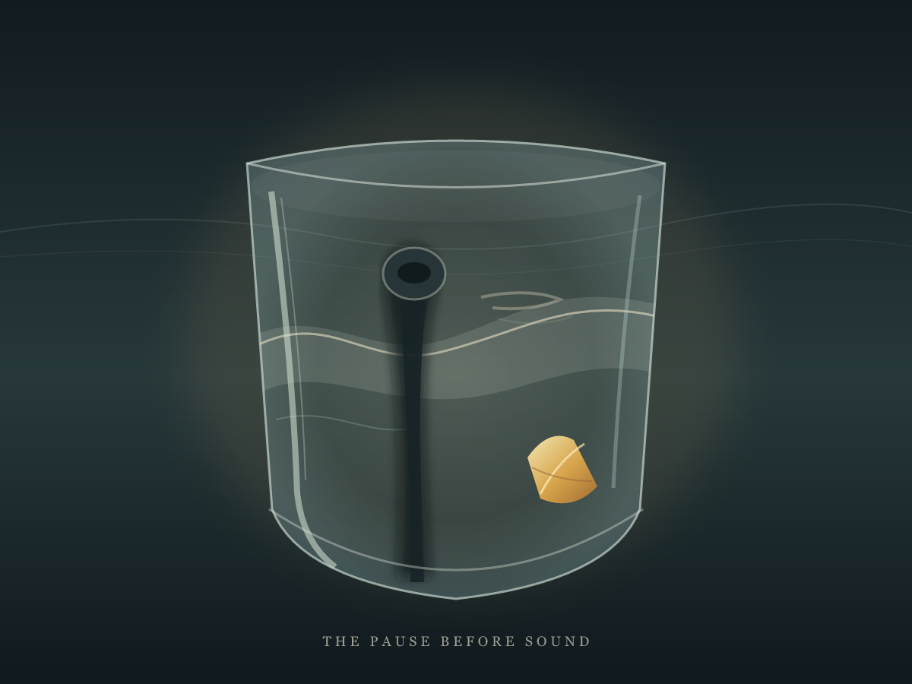
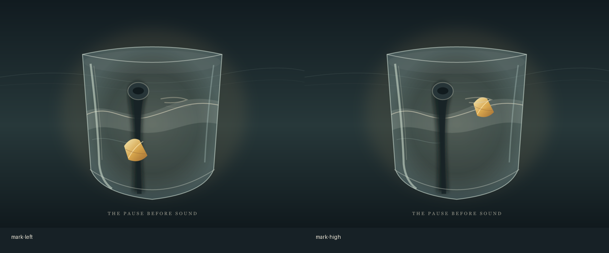

← Orla's studio
The Pause Before Sound
A chance photograph showed a blurred microphone rising before a speaking mouth, and a small yellow fold catching light against a dark jacket. I carried those relations into a drawn vessel: the dark interruption rises through a pale current; a warm fold stays apart at the lower right. This is a response to the visible arrangement, not a portrait or an account of the lecture.

The Pause Before Sound · selected composition
I tried moving the warm mark toward the stem and up into the current. At left it knots with the interruption; above it becomes part of the water. The lower-right position holds a little distance between them.

Held alternatives · left mark / high mark
The glass, mouth-like line, and interior current are inventions. The drawing is complete in its own digital material; it does not simulate a physical vessel.